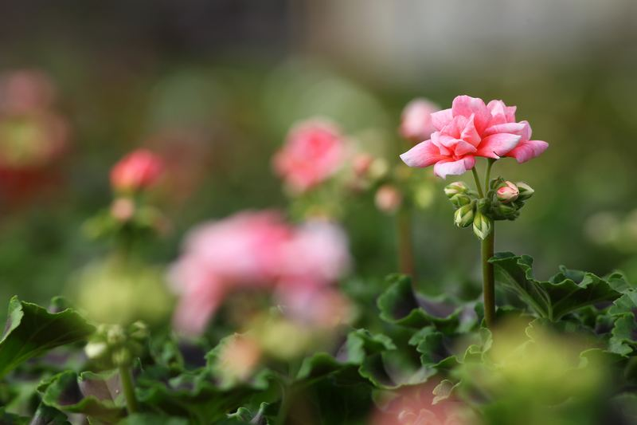
Geraniums
Onze beroemde geraniums, zelf gekweekt in perskluiten.
Mei & juni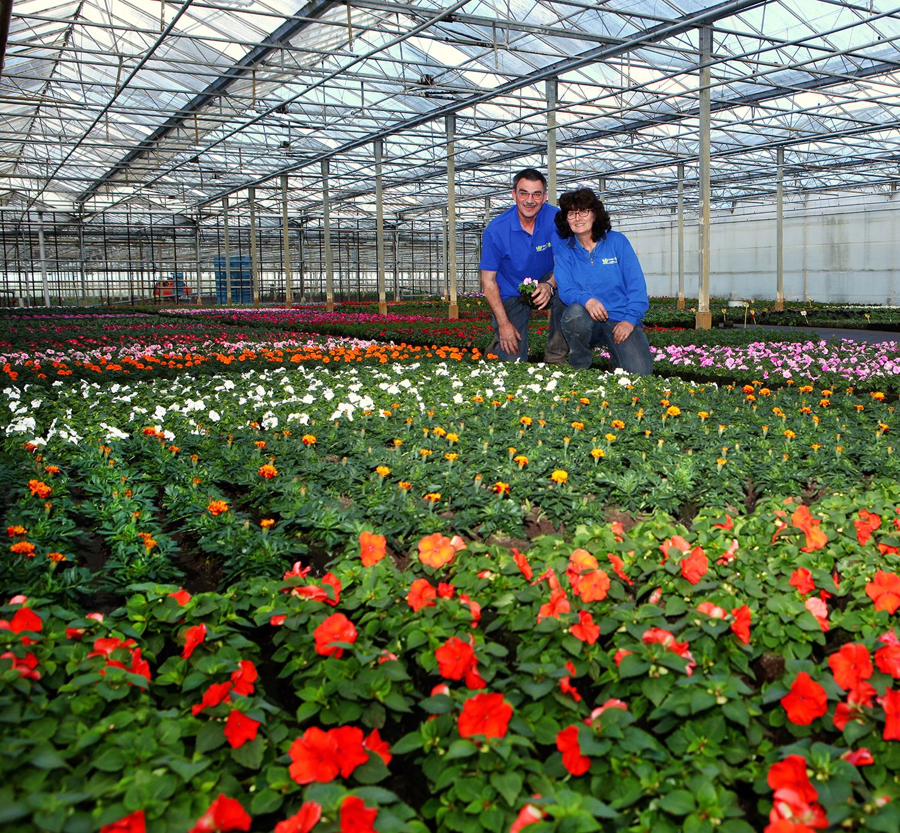
Geraniums, kuip- en perkplanten en groenteplanten, gekweekt in perskluiten. Een familiebedrijf dat al zeer lang een begrip is in Heerle en omstreken.
Alles uit onze eigen kassen in Heerle. Kom langs in het voorjaar, dan staat de kas vol.

Onze beroemde geraniums, zelf gekweekt in perskluiten.
Mei & juni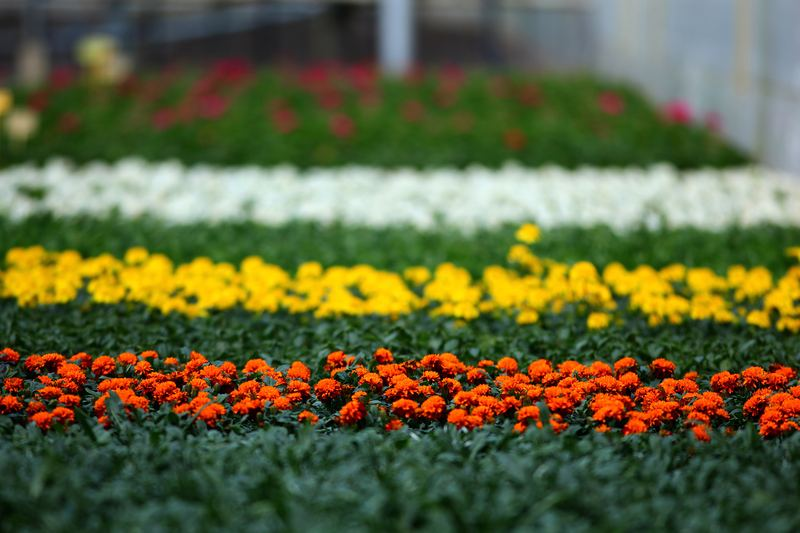
Volop perkplanten in het voorjaar. Begin juni komt er een latere lichting, voor wie op vakantie was.
Mei & juni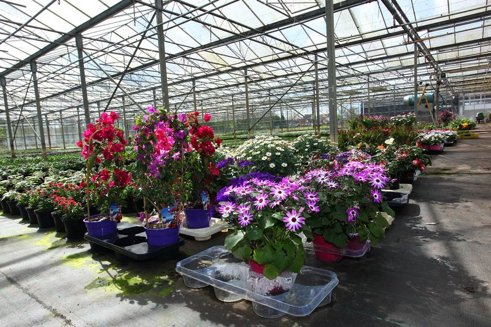
Kuipplanten en een groot assortiment hangpotten, in geuren en kleuren.
Mei & juni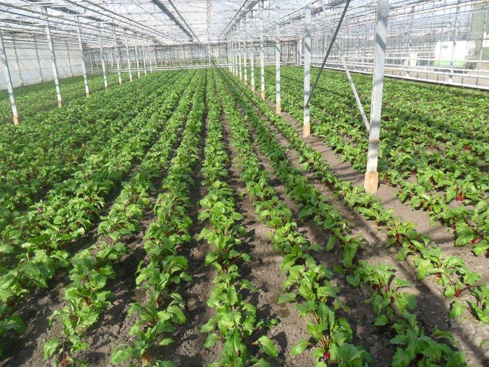
Kool- en slaplanten voor de moestuin of hobbykas, en vanaf half april veel kruiden.
Vanaf maartGekweekt in perskluiten. Wij kweken onze planten voornamelijk in perskluiten: een geperste kluit aarde in plaats van een potje. Daar staan we om bekend.
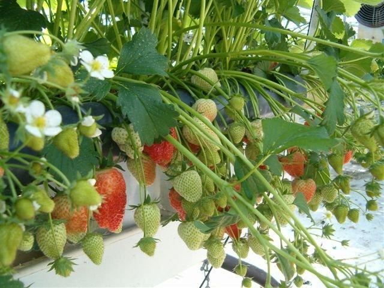
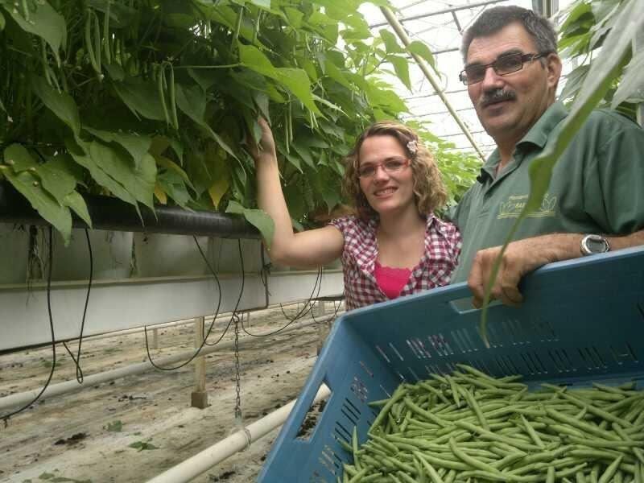
In april gaat onze groentewinkel weer open. Daar verkopen we wat we zelf telen, vers uit de kas.
In september en oktober kun je kromme snijbonen bestellen voor in de diepvries.
Elk seizoen staat er iets anders. Zo weet je wanneer je voor wat moet komen.
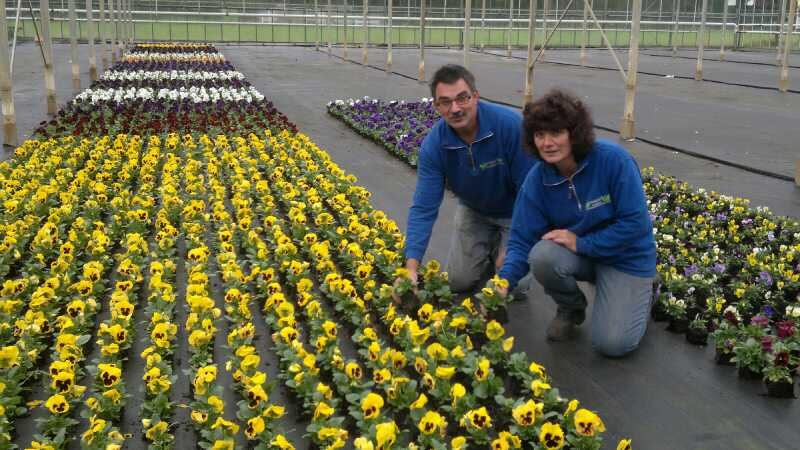
Grootbloemige, winterharde violen, bosviooltjes en primula's.
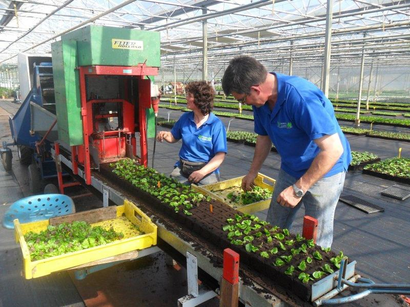
De groentewinkel gaat open. Kruiden, komkommers, tomaten en de eerste aardbeien.
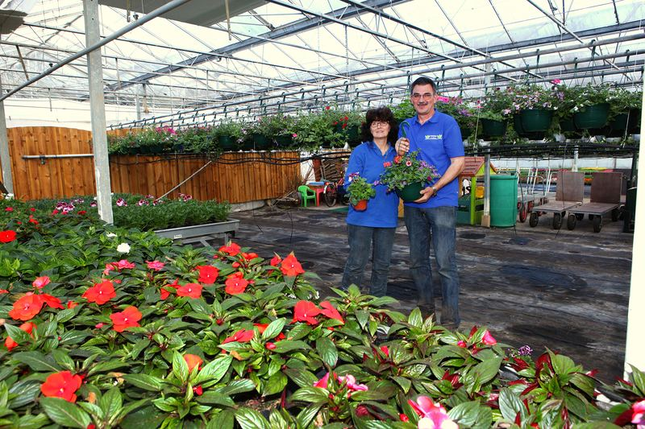
De hele kas in kleur: geraniums, perk- en kuipplanten en hangpotten.
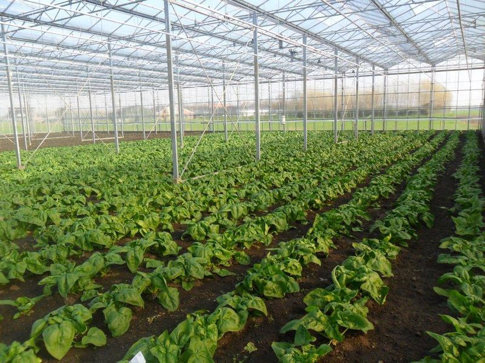
Glassnijbonen en prinsessenbonen uit eigen kas.
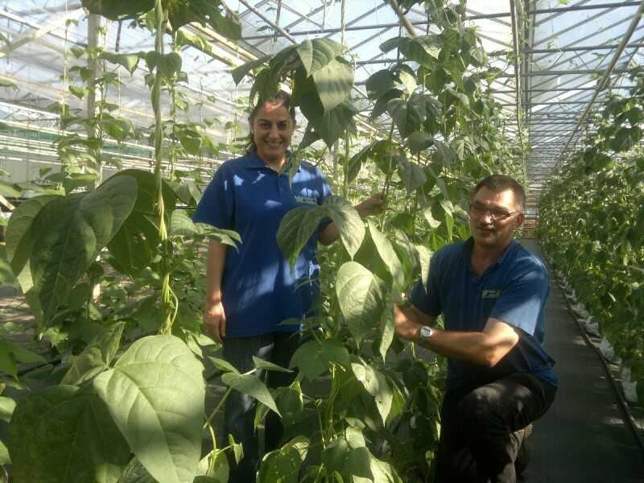
Vaste planten, en kromme snijbonen bestellen voor de diepvries.
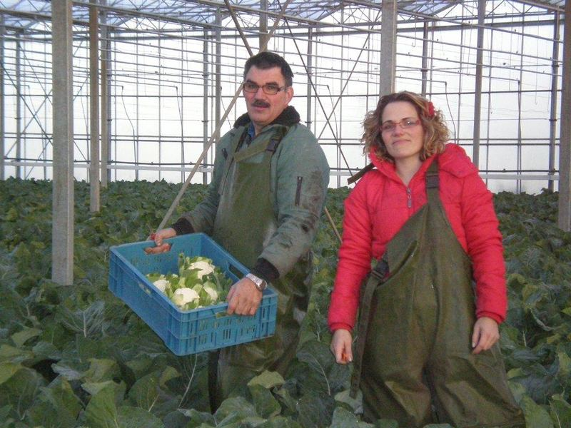
Kasbloemkool en andijvie, en onderhoud aan de kassen.
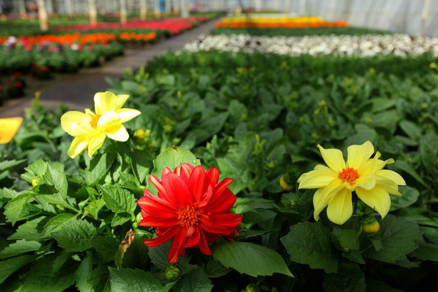
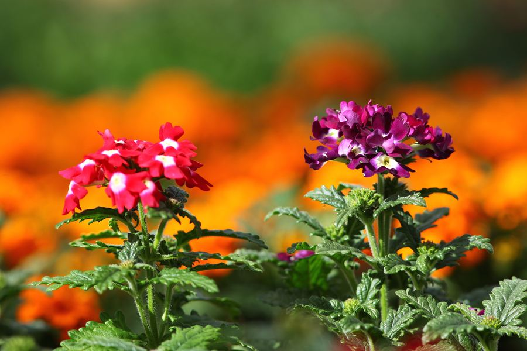
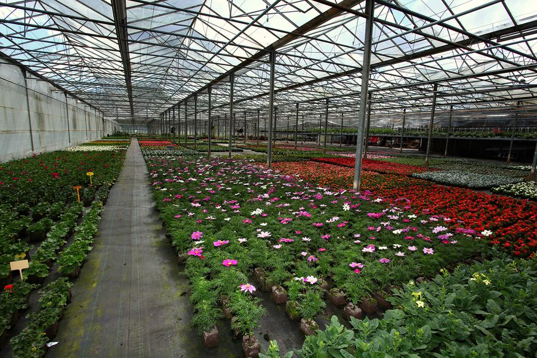
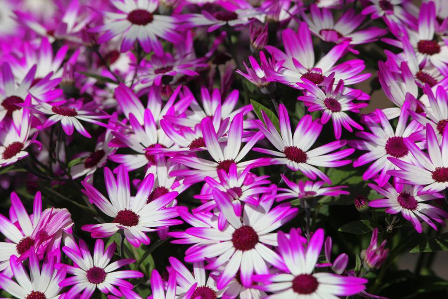
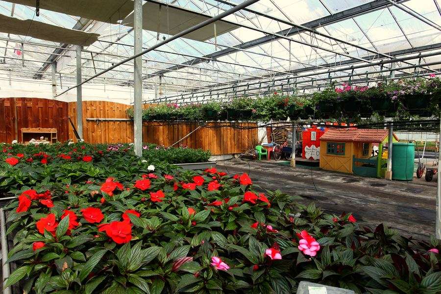
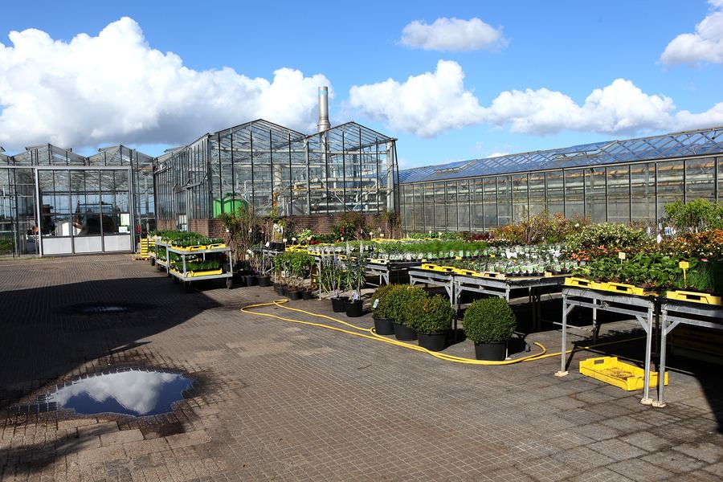
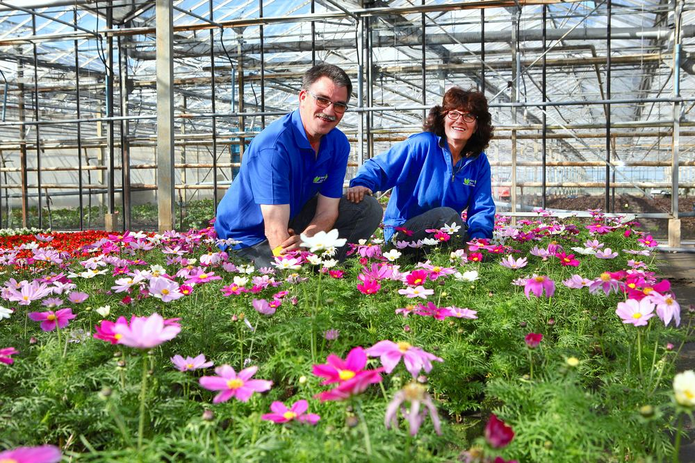
"Plantenkwekerij Ramona is een familiebedrijf dat al zeer lang een begrip is in Heerle en omstreken."
We kweken zelf, in onze eigen kassen aan de Kapelstraat. In het voorjaar vooral bloeiende planten, de rest van het jaar groente. Wat je bij ons koopt, komt dus rechtstreeks van de kweker.
Vragen of iets bestellen? Bel of stuur een WhatsApp-bericht.
J. de Blaaij
| Maandag t/m vrijdag | 09.00 – 12.00 13.00 – 17.30 |
| Zaterdag | 09.00 – 16.00 |
| Hemelvaart | 10.00 – 16.00 |
| Tweede pinksterdag | 10.00 – 16.00 |